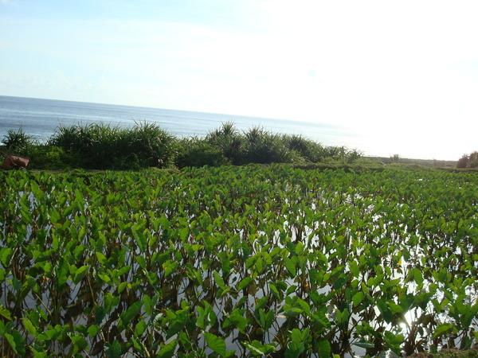
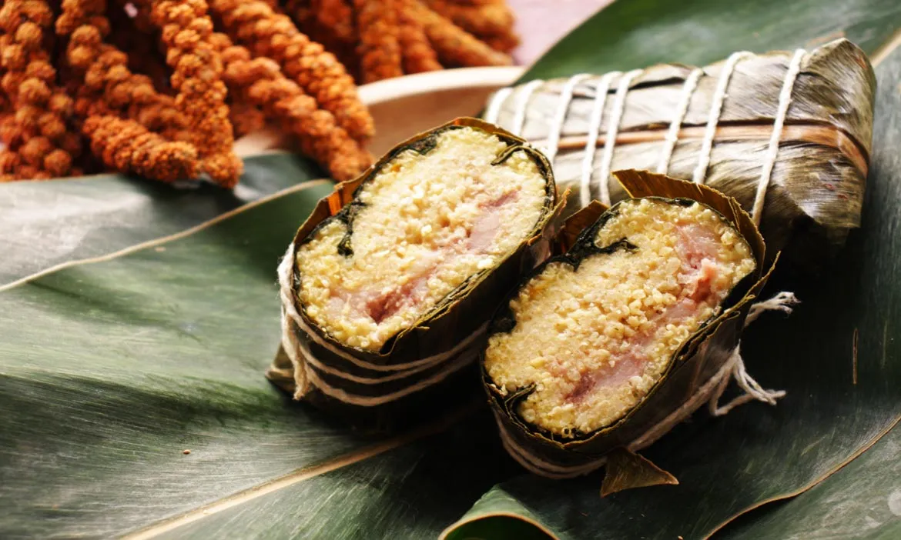

第一站：清晨的灶腳（起床與工作準備）
AM 05:30飛魚乾（Arayu）的柴燻工藝
天剛破曉，達悟青年 Suyan 在傳統地下屋醒來。為了今日長途捕魚與田間勞作，必須檢視耐存放的生存食糧。他走到屋外的魚架旁，處理昨日捕獲的飛魚。
💡 互動點 A：動態製程切換（點擊體驗）
點擊下方按鈕，切換日間與夜間的不同保存工藝：
【鹽日曬法】在拼板舟上刮除魚鱗並取出內臟，清洗抹鹽後，日間掛在海岸魚架上接受陽光強烈曝曬脫水。
第二站：海洋與田間（出海捕魚與婦女勞動）
PM 12:00
主食水芋（Soli）與甘藷（Wakei）
中午時分，Suyan 推著拼板舟從黑潮歸來；與此同時，家族中的婦女也從細心灌溉的水芋田中採收而歸。全家人聚集在一起，烹煮水芋塊莖，搭配早先準備好的飛魚乾作為扎實的午餐。芋田的管理，正衡量著家庭的勤勞與福份。
💡 互動點 B：歲時汛期時間軸（拖動滑桿）
第三站：部落的慶典（歲時感恩分享）
PM 18:30
原民傳統慶典美食：阿粨（A-bai）
夜幕低垂，部落迎來了盛大的感恩收穫祭。婦女們齊聚一堂，一邊吟唱傳統歌謠，一邊熟練地包裹著阿粨。這是排灣族、魯凱族與卑南族等原住民在重大祭典、婚禮或迎賓時最神聖的食物，包裹著對土地的虔敬與凝聚部落女力的故事。
💡 互動點 C：阿粨結構動態解構（點擊探索）
點擊按鈕層層剝開阿粨，理解原民飲食的生活智慧：
【第一層：外包裹 - 月桃葉】 提供獨特香氣並定型，耐蒸煮，食用前需剝除。
【第二層：內靈魂 - 假酸漿葉】 核心精華！富含高纖維與葉綠素，老獵人的保鮮智慧。可與內餡一同吃下，具整腸、消除脹氣防不適之神奇功效。
【第三層：核心內餡 - 小米與山豬肉】 經木杵搗實的小米與新鮮豬肉完美融合，象徵慶典的豐收。